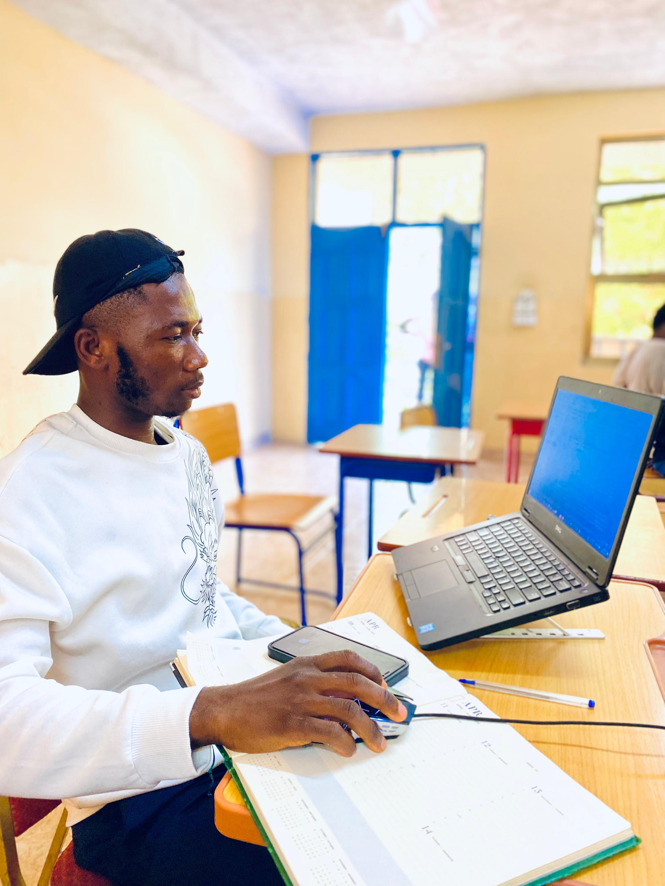
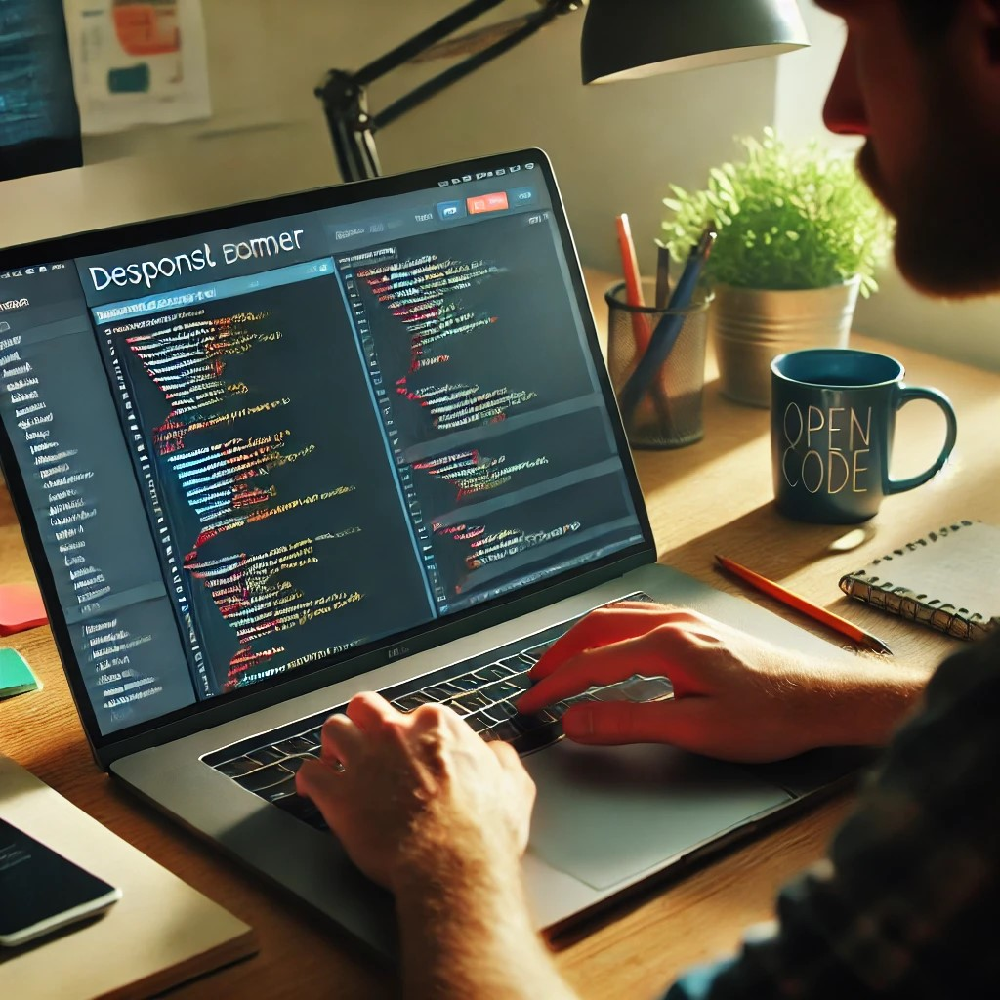

MY JOURNEY AS A SOFTWARE ENGINEER AND A WEB DEVELOPER
Introduction to My Journey
My name is Akeluru Dungase James, and my passion for technology has been the driving force behind my decision to pursue a career in software engineering and web development.
As a Computer Science student at the Ghana Communication Technology University, I have been immersed in the intricate world of programming, algorithms, and the vast possibilities technology offers.
This journey began as a curiosity about how websites and applications are created, which soon transformed into a deep-seated interest in problem-solving and innovation.
My first encounter with coding was challenging yet exhilarating—each line of code represented an opportunity to create something impactful.
That initial spark set me on a path of continuous learning,
a journey of exploration in both software engineering and web development.

Exploring Software Engineering
The world of software engineering has taught me the value of persistence and critical thinking.
Whether it's debugging an elusive error or designing an efficient algorithm, every challenge offers a learning opportunity.
My coursework at the university has provided me with a strong foundation, from understanding computer architecture to learning various programming languages like Python, JavaScript, and C++.
These skills have allowed me to build projects that range from simple command-line tools to complex web applications.
Collaborating with peers on group projects has been particularly enriching,
as it has exposed me to diverse perspectives and taught me the importance of teamwork in achieving a common goal.
Creative Ventures in Web Development
Web development, on the other hand, has been a creative outlet for me.
The ability to design and build websites that are not only functional but also visually appealing has been a rewarding experience.
I have delved into front-end technologies like HTML, CSS, and JavaScript, as well as back-end frameworks like Node.js and databases such as MySQL.
Each project I undertake teaches me new ways to create user-friendly interfaces and ensure seamless user experiences.
One of my proudest achievements was developing a responsive website for a local business, which enhanced their online presence and attracted more customers.
That project was a testament to the real-world impact of web development.

Looking Towards the Future
Looking ahead, I am excited about the future of my career in software engineering and web development.
The ever-evolving nature of technology means there will always be new challenges to tackle and innovations to explore.
I aspire to specialize in areas like artificial intelligence and machine learning while honing my skills in web development.
My ultimate goal is to create software solutions that address real-world problems and make technology accessible to all.
As I continue this journey, I am reminded of the words of Alan Turing: "Sometimes it is the people no one can imagine anything of who do the things no one can imagine."
This inspires me to push boundaries and turn my dreams into reality.
1:AKELURU DUNGASE JAMES [1705917042]
2:SAMUEL TETTEY NYARKO [1705918382]
3:ENOCK BOADU [1704751112]